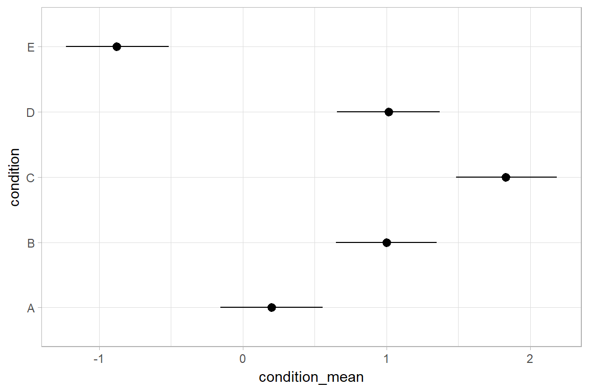
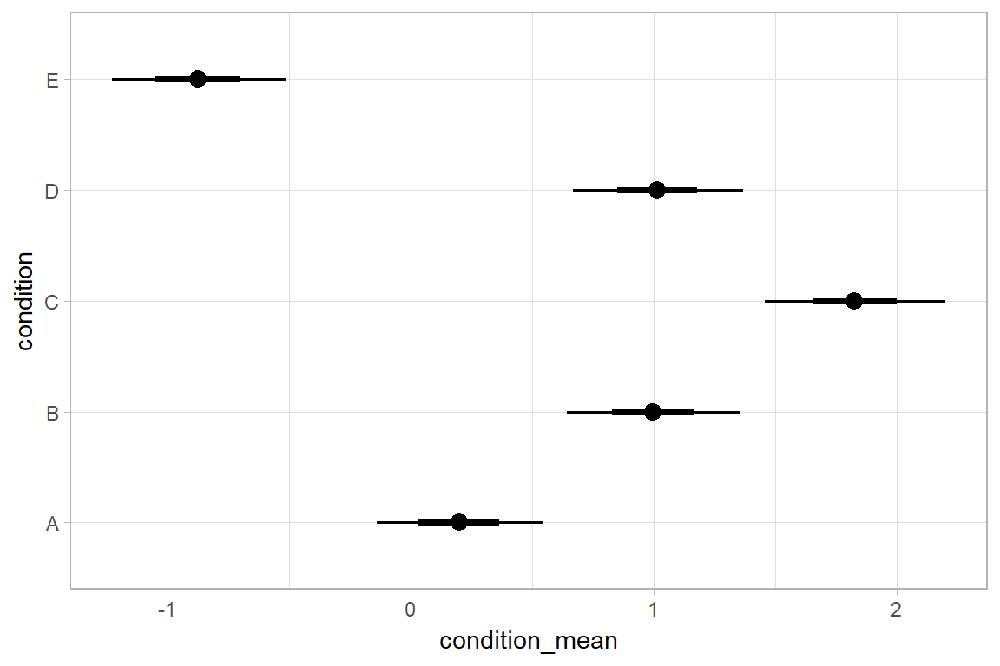
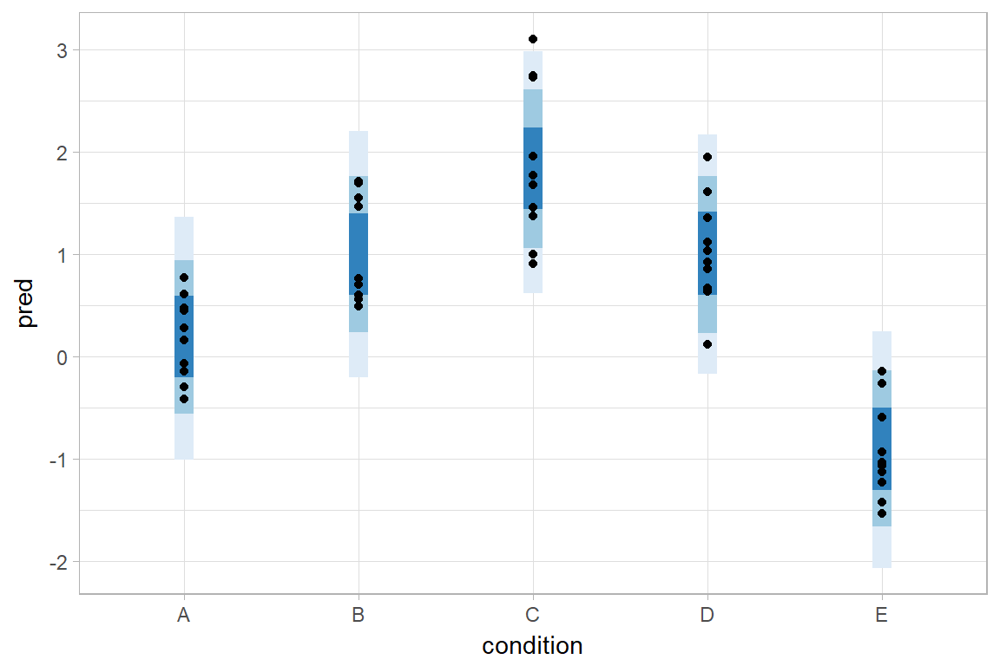
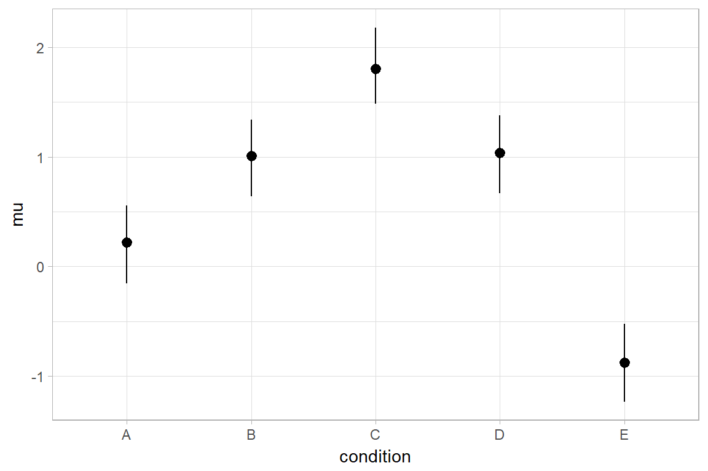

Extracting tidy samples from rstanarm
Matthew Kay
2017-08-24
Introduction
This vignette describes how to use the tidybayes package to extract tidy samples from rstanarm. For a more general introduction to tidybayes and its use on more general-purpose sampling languages (like Stan and JAGS), see vignette(“tidybayes”).
The default output data formats of popular samplers like JAGS and Stan often don’t quite conform to the ideal of tidy data. Output formats will often be in matrix form (requiring conversion for use with libraries like ggplot). tidybayes automates munging the samples into tidy formats.
Setup
The following libraries are required to run this vignette:
library(magrittr)
library(dplyr)
library(tidybayes)
library(ggplot2)
library(ggstance)
library(rstan)
library(rstanarm)These options help Stan run faster:
rstan_options(auto_write = TRUE)
options(mc.cores = parallel::detectCores())Example dataset
To demonstrate tidybayes, we will use a simple dataset with 10 observations from 5 conditions each:
set.seed(5)
n = 10
n_condition = 5
ABC =
data_frame(
condition = rep(c("A","B","C","D","E"), n),
response = rnorm(n * 5, c(0,1,2,1,-1), 0.5)
)A snapshot of the data looks like this:
head(ABC, 10)## # A tibble: 10 x 2
## condition response
## <chr> <dbl>
## 1 A -0.4204277
## 2 B 1.6921797
## 3 C 1.3722541
## 4 D 1.0350714
## 5 E -0.1442796
## 6 A -0.3014540
## 7 B 0.7639168
## 8 C 1.6823143
## 9 D 0.8571132
## 10 E -0.9309459(10 rows of 50)
This is a typical tidy format data frame: one observation per row. Graphically:
ABC %>%
ggplot(aes(y = condition, x = response)) +
geom_point()
Model
Let’s fit a hierarchical model with shrinkage towards a global mean:
m = stan_lmer(response ~ (1|condition), data = ABC,
prior = normal(0, 1, autoscale = FALSE),
prior_aux = student_t(3, 0, 1, autoscale = FALSE),
adapt_delta = .99)## trying deprecated constructor; please alert package maintainerThe results look like this:
summary(m)##
## Model Info:
##
## function: stan_lmer
## family: gaussian [identity]
## formula: response ~ (1 | condition)
## algorithm: sampling
## priors: see help('prior_summary')
## sample: 4000 (posterior sample size)
## num obs: 50
## groups: condition (5)
##
## Estimates:
## mean sd 2.5% 25% 50%
## (Intercept) 0.6 0.5 -0.4 0.3 0.6
## b[(Intercept) condition:A] -0.4 0.5 -1.5 -0.7 -0.4
## b[(Intercept) condition:B] 0.4 0.5 -0.8 0.0 0.4
## b[(Intercept) condition:C] 1.2 0.5 0.1 0.9 1.2
## b[(Intercept) condition:D] 0.4 0.5 -0.7 0.1 0.4
## b[(Intercept) condition:E] -1.5 0.5 -2.6 -1.8 -1.5
## sigma 0.6 0.1 0.5 0.5 0.6
## Sigma[condition:(Intercept),(Intercept)] 1.3 1.1 0.3 0.7 1.0
## mean_PPD 0.6 0.1 0.4 0.6 0.6
## log-posterior -56.9 2.4 -62.9 -58.3 -56.5
## 75% 97.5%
## (Intercept) 0.9 1.7
## b[(Intercept) condition:A] -0.1 0.6
## b[(Intercept) condition:B] 0.7 1.4
## b[(Intercept) condition:C] 1.5 2.3
## b[(Intercept) condition:D] 0.7 1.4
## b[(Intercept) condition:E] -1.2 -0.5
## sigma 0.6 0.7
## Sigma[condition:(Intercept),(Intercept)] 1.5 3.8
## mean_PPD 0.7 0.9
## log-posterior -55.2 -53.4
##
## Diagnostics:
## mcse Rhat n_eff
## (Intercept) 0.0 1.0 968
## b[(Intercept) condition:A] 0.0 1.0 1036
## b[(Intercept) condition:B] 0.0 1.0 1003
## b[(Intercept) condition:C] 0.0 1.0 978
## b[(Intercept) condition:D] 0.0 1.0 1027
## b[(Intercept) condition:E] 0.0 1.0 1011
## sigma 0.0 1.0 2556
## Sigma[condition:(Intercept),(Intercept)] 0.0 1.0 1374
## mean_PPD 0.0 1.0 3721
## log-posterior 0.1 1.0 1069
##
## For each parameter, mcse is Monte Carlo standard error, n_eff is a crude measure of effective sample size, and Rhat is the potential scale reduction factor on split chains (at convergence Rhat=1).
Gathering samples from a fit in tidy-format using spread_samples
Now that we have our results, the fun begins: getting the samples out in a tidy format! For example, given these parameters:
b[(Intercept) condition:A]b[(Intercept) condition:B]b[(Intercept) condition:C]b[(Intercept) condition:D]b[(Intercept) condition:E]
We might want a data frame where each row is a sample from either b[(Intercept) condition:A], b[(Intercept) condition:B], ...:C], ...:D], or ...:E], and where we have columns indexing which iteration of the sampler the sample came from and which condition it is for. That would allow us to easily compute quantities grouped by condition, or generate plots by condition using ggplot, or even merge samples with the original data to plot data and estimates.
The workhorse of tidybayes is the spread_samples function, which does this extraction for us. It includes a simple specification format that we can use to extract parameters and their indices into tidy-format data frames.
Gathering parameter indices into a separate column in a tidy format data frame
Given a parameter like this:
b[(Intercept) condition:D]
We can provide spread_samples with a column specification like this:
b[term,group,condition]
Where term corresponds to (Intercept), group to condition, and condition to D. There is nothing too magical about what spread_samples does with this specification: under the hood, it splits the parameter indices by spaces, :, and ,, and lets you assign columns to the resulting indices in order. So b[(Intercept) condition:D] has indices (Intercept), condition, and D, and gather samples lets us extract these indices as columns and get a tidy data frame of samples of b:
m %>%
spread_samples(b[term,group,condition]) %>%
head(10)## # A tibble: 10 x 6
## # Groups: term, group, condition [5]
## .chain .iteration term group condition b
## <int> <int> <chr> <chr> <chr> <dbl>
## 1 1 1 (Intercept) condition A -0.4153273
## 2 1 1 (Intercept) condition B 0.2221692
## 3 1 1 (Intercept) condition C 0.9201018
## 4 1 1 (Intercept) condition D 0.2773821
## 5 1 1 (Intercept) condition E -1.8359644
## 6 1 2 (Intercept) condition A -0.7725661
## 7 1 2 (Intercept) condition B 0.2706790
## 8 1 2 (Intercept) condition C 1.1032067
## 9 1 2 (Intercept) condition D 0.0731117
## 10 1 2 (Intercept) condition E -1.6890449(10 rows of 20000)
We can choose whatever names we want for the index columns; e.g.:
m %>%
spread_samples(b[t,g,c]) %>%
head(10)## # A tibble: 10 x 6
## # Groups: t, g, c [5]
## .chain .iteration t g c b
## <int> <int> <chr> <chr> <chr> <dbl>
## 1 1 1 (Intercept) condition A -0.4153273
## 2 1 1 (Intercept) condition B 0.2221692
## 3 1 1 (Intercept) condition C 0.9201018
## 4 1 1 (Intercept) condition D 0.2773821
## 5 1 1 (Intercept) condition E -1.8359644
## 6 1 2 (Intercept) condition A -0.7725661
## 7 1 2 (Intercept) condition B 0.2706790
## 8 1 2 (Intercept) condition C 1.1032067
## 9 1 2 (Intercept) condition D 0.0731117
## 10 1 2 (Intercept) condition E -1.6890449(10 rows of 20000)
But the more descriptive and less cryptic names from the previous example are probably preferable.
In this particular model, there is only one term ((Intercept)) and one group (condition), thus we could omit those two indices altogether to just get each condition and the value of b for that condition:
m %>%
spread_samples(b[,,condition]) %>%
head(10)## # A tibble: 10 x 4
## # Groups: condition [5]
## .chain .iteration condition b
## <int> <int> <chr> <dbl>
## 1 1 1 A -0.4153273
## 2 1 1 B 0.2221692
## 3 1 1 C 0.9201018
## 4 1 1 D 0.2773821
## 5 1 1 E -1.8359644
## 6 1 2 A -0.7725661
## 7 1 2 B 0.2706790
## 8 1 2 C 1.1032067
## 9 1 2 D 0.0731117
## 10 1 2 E -1.6890449(10 rows of 20000)
Note: If you have used spread_samples with raw samples from Stan or JAGS, you may be used to using recover_types before spread_samples to get index column values back (e.g. if the index was a factor). This is not necessary when using spread_samples on rstanarm models, because those models already contain that information in their parameter names. For more on recover_types, see vignette(“tidybayes”).
Point estimates and intervals
With simple parameters
tidybayes provides a family of functions for generating point estimates and intervals from samples in a tidy format. These functions follow the naming scheme [mean|median|mode]_[qi|hdi], for example, mean_qi, median_qi, mode_hdi, and so on. The first name (before the _) indicates the type of point estimate, and the second name indicates the type of interval. qi yields a quantile interval (a.k.a. equi-tailed interval, central interval, or percentile interval) and hdi yields a highest (posterior) density interval. Custom estimates or intervals can also be applied using the point_interval function.
For example, we might gather the samples corresponding to the overall mean and standard deviation of observations:
m %>%
spread_samples(`(Intercept)`, sigma) %>%
head(10)## # A tibble: 10 x 4
## .chain .iteration `(Intercept)` sigma
## <int> <int> <dbl> <dbl>
## 1 1 1 0.8699070 0.5333002
## 2 1 2 0.8832496 0.5056943
## 3 1 3 0.6715576 0.4930277
## 4 1 4 1.0636952 0.6305244
## 5 1 5 0.6542920 0.6138746
## 6 1 6 0.3660638 0.5466326
## 7 1 7 1.2801615 0.5720004
## 8 1 8 0.6968664 0.6624411
## 9 1 9 0.9964885 0.5224797
## 10 1 10 0.9763288 0.5209886(10 rows of 4000)
Like with b[term,group,condition], this gives us a tidy data frame. If we want the mean and 95% quantile interval of the parameters, we can apply mean_qi:
m %>%
spread_samples(`(Intercept)`, sigma) %>%
mean_qi(`(Intercept)`, sigma)## # A tibble: 1 x 7
## `(Intercept)` `(Intercept).low` `(Intercept).high` sigma sigma.low
## <dbl> <dbl> <dbl> <dbl> <dbl>
## 1 0.6433902 -0.3851976 1.688643 0.5665717 0.4611307
## # ... with 2 more variables: sigma.high <dbl>, .prob <dbl>We can specify the columns we want to get means and intervals from, as above, or if we omit the list of columns, mean_qi will use every column that is not a grouping column or a special column (one that starts with ., like .chain or .iteration). Thus in the above example, (Intercept) and sigma are redundant arguments to mean_qi because they are also the only columns we gathered from the model. So we can simplify this to:
m %>%
spread_samples(`(Intercept)`, sigma) %>%
mean_qi()## # A tibble: 1 x 7
## `(Intercept)` `(Intercept).low` `(Intercept).high` sigma sigma.low
## <dbl> <dbl> <dbl> <dbl> <dbl>
## 1 0.6433902 -0.3851976 1.688643 0.5665717 0.4611307
## # ... with 2 more variables: sigma.high <dbl>, .prob <dbl>If you would rather have a long-format list of intervals, use gather_samples instead:
m %>%
gather_samples(`(Intercept)`, sigma) %>%
mean_qi()## # A tibble: 2 x 5
## # Groups: term [2]
## term estimate conf.low conf.high .prob
## <chr> <dbl> <dbl> <dbl> <dbl>
## 1 (Intercept) 0.6433902 -0.3851976 1.6886433 0.95
## 2 sigma 0.5665717 0.4611307 0.6967005 0.95The conf.low and conf.high naming scheme is used when mean_qi summarizes a single column in order to be consistent with the output of broom::tidy. This makes it easier to compare output from tidybayes to other models supported by broom.
For more on gather_samples, see vignette(“tidybayes”).
With indexed parameters
When we have a parameter with one or more indices, such as b, we can apply mean_qi (or other functions in the point_estimate family) as we did before:
m %>%
spread_samples(b[,,condition]) %>%
mean_qi()## # A tibble: 5 x 5
## # Groups: condition [5]
## condition b conf.low conf.high .prob
## <chr> <dbl> <dbl> <dbl> <dbl>
## 1 A -0.4434288 -1.5048407 0.6114279 0.95
## 2 B 0.3578635 -0.7800456 1.4029255 0.95
## 3 C 1.1863379 0.1207575 2.2708772 0.95
## 4 D 0.3700134 -0.6933094 1.4065167 0.95
## 5 E -1.5211353 -2.6445936 -0.4682927 0.95How did mean_qi know what to aggregate? Data frames returned by spread_samples are automatically grouped by all index variables you pass to it; in this case, that means spread_samples groups its results by condition. mean_qi respects those groups, and calculates the estimates and intervals within all groups. Then, because no columns were passed to mean_qi, it acts on the only non-special (.-prefixed) and non-group column, b. So the above shortened syntax is equivalent to this more verbose call:
m %>%
spread_samples(b[,,condition]) %>%
group_by(condition) %>% # this line not necessary (done by spread_samples)
mean_qi(b) # b is not necessary (it is the only non-group column)## # A tibble: 5 x 5
## # Groups: condition [5]
## condition b conf.low conf.high .prob
## <chr> <dbl> <dbl> <dbl> <dbl>
## 1 A -0.4434288 -1.5048407 0.6114279 0.95
## 2 B 0.3578635 -0.7800456 1.4029255 0.95
## 3 C 1.1863379 0.1207575 2.2708772 0.95
## 4 D 0.3700134 -0.6933094 1.4065167 0.95
## 5 E -1.5211353 -2.6445936 -0.4682927 0.95Combining variables with different indices in a single tidy format data frame
spread_samples supports gathering variables that have different indices in the same data frame. It automatically matches up indices with the same name, and duplicates values as necessary to produce one row per all combination of levels of all indices. For example, we might want to calculate the mean within each condition (call this condition_mean). In this model, that mean is the intercept ((Intercept)) plus the effect for a given condition (b).
We can gather samples from (Intercept) and b together in a single data frame:
m %>%
spread_samples(`(Intercept)`, b[,,condition]) %>%
head(10)## # A tibble: 10 x 5
## # Groups: condition [5]
## .chain .iteration `(Intercept)` condition b
## <int> <int> <dbl> <chr> <dbl>
## 1 1 1 0.8699070 A -0.4153273
## 2 1 1 0.8699070 B 0.2221692
## 3 1 1 0.8699070 C 0.9201018
## 4 1 1 0.8699070 D 0.2773821
## 5 1 1 0.8699070 E -1.8359644
## 6 1 2 0.8832496 A -0.7725661
## 7 1 2 0.8832496 B 0.2706790
## 8 1 2 0.8832496 C 1.1032067
## 9 1 2 0.8832496 D 0.0731117
## 10 1 2 0.8832496 E -1.6890449(10 rows of 20000)
Within each sample, (Intercept) is repeated as necessary to correspond to every index of b. Thus, the mutate function from dplyr can be used to find their sum, condition_mean (which is the estimated mean for each condition):
m %>%
spread_samples(`(Intercept)`, b[,,condition]) %>%
mutate(condition_mean = `(Intercept)` + b) %>%
mean_qi(condition_mean)## Warning: package 'bindrcpp' was built under R version 3.4.1## # A tibble: 5 x 5
## # Groups: condition [5]
## condition condition_mean conf.low conf.high .prob
## <chr> <dbl> <dbl> <dbl> <dbl>
## 1 A 0.1999614 -0.1545082 0.5565023 0.95
## 2 B 1.0012536 0.6477895 1.3496700 0.95
## 3 C 1.8297281 1.4837925 2.1847173 0.95
## 4 D 1.0134035 0.6567301 1.3714016 0.95
## 5 E -0.8777451 -1.2309913 -0.5152876 0.95mean_qi can also take column expressions (rather than just column names), so we can simplify the above example by moving the calculation of condition_mean from mutate into mean_qi:
m %>%
spread_samples(`(Intercept)`, b[,,condition]) %>%
mean_qi(condition_mean = `(Intercept)` + b)## # A tibble: 5 x 5
## # Groups: condition [5]
## condition condition_mean conf.low conf.high .prob
## <chr> <dbl> <dbl> <dbl> <dbl>
## 1 A 0.1999614 -0.1545082 0.5565023 0.95
## 2 B 1.0012536 0.6477895 1.3496700 0.95
## 3 C 1.8297281 1.4837925 2.1847173 0.95
## 4 D 1.0134035 0.6567301 1.3714016 0.95
## 5 E -0.8777451 -1.2309913 -0.5152876 0.95Plotting point estimates and intervals
Plotting means and intervals is straightforward using the “pointrange” or “pointrangeh” geoms:
m %>%
spread_samples(`(Intercept)`, b[,,condition]) %>%
mean_qi(condition_mean = `(Intercept)` + b) %>%
ggplot(aes(y = condition, x = condition_mean, xmin = conf.low, xmax = conf.high)) +
geom_pointrangeh()
Interval estimates with multiple probability levels
mean_qi and its sister functions can also produce an arbitrary number of probability intervals by setting the .prob = argument:
m %>%
spread_samples(`(Intercept)`, b[,,condition]) %>%
mean_qi(condition_mean = `(Intercept)` + b, .prob = c(.95, .8, .5))## # A tibble: 15 x 5
## # Groups: condition [5]
## condition condition_mean conf.low conf.high .prob
## <chr> <dbl> <dbl> <dbl> <dbl>
## 1 A 0.1999614 -0.15450818 0.5565023 0.95
## 2 B 1.0012536 0.64778953 1.3496700 0.95
## 3 C 1.8297281 1.48379254 2.1847173 0.95
## 4 D 1.0134035 0.65673008 1.3714016 0.95
## 5 E -0.8777451 -1.23099129 -0.5152876 0.95
## 6 A 0.1999614 -0.02930002 0.4283730 0.80
## 7 B 1.0012536 0.77686781 1.2357558 0.80
## 8 C 1.8297281 1.60340493 2.0550345 0.80
## 9 D 1.0134035 0.79184276 1.2419299 0.80
## 10 E -0.8777451 -1.10581219 -0.6456298 0.80
## 11 A 0.1999614 0.08393472 0.3161406 0.50
## 12 B 1.0012536 0.87857907 1.1186001 0.50
## 13 C 1.8297281 1.71254516 1.9453390 0.50
## 14 D 1.0134035 0.89586528 1.1303665 0.50
## 15 E -0.8777451 -0.99566047 -0.7614082 0.50The results are in a tidy format: one row per group and probability level (.prob). This facilitates plotting. For example, assigning -.prob to the size aesthetic will show all intervals, making thicker lines correspond to smaller intervals:
m %>%
spread_samples(`(Intercept)`, b[,,condition]) %>%
mean_qi(condition_mean = `(Intercept)` + b, .prob = c(.95, .8, .5)) %>%
ggplot(aes(y = condition, x = condition_mean, xmin = conf.low, xmax = conf.high,
size = -.prob # shorter interval => thicker line
)) +
geom_pointrangeh(
fatten = 2 # smaller point estimate (otherwise it is very large)
) +
scale_size_continuous(
range = c(1, 2.5), # default range is c(0, 6) --- makes very thick lines
guide = FALSE # no need for a legend on size
)
Making posterior predictions
We can use combinations of variables with difference indices to generate predictions from the model. In this case, we can combine the group means with the residual standard deviation to generate predictive distributions from the model:
m %>%
spread_samples(`(Intercept)`, b[,,condition], sigma) %>%
mutate(pred = rnorm(n(), `(Intercept)` + b, sigma)) %>%
ggplot(aes(x = pred)) +
stat_density() +
facet_grid(condition ~ ., switch = "y")
And even summarize these as predictive intervals and compare to the data:
m %>%
spread_samples(`(Intercept)`, b[,,condition], sigma) %>%
mutate(pred = rnorm(n(), `(Intercept)` + b, sigma)) %>%
mean_qi(pred, .prob = c(.95, .8, .5)) %>%
ggplot(aes(x = condition, y = pred)) +
geom_linerange(aes(ymin = conf.low, ymax = conf.high,
color = ordered(-.prob)),
size = 4) +
geom_point(aes(y = response), data = ABC) +
scale_color_brewer(guide = FALSE)
If this model is well-calibrated, about 95% of the data should be in the outer intervals, 80% in the next-smallest intervals, and 50% in the smallest intervals.
Altogether, data, posterior predictions, and estimates of the means:
samples = m %>%
spread_samples(`(Intercept)`, b[,,condition], sigma) %>%
mutate(mu = `(Intercept)` + b)
reps = samples %>%
mutate(pred = rnorm(n(), mu, sigma)) %>%
mean_qi(pred, .prob = c(.95, .8, .5))
parameters = samples %>%
mean_qi(mu, .prob = c(.95, .66))
ABC %>%
ggplot(aes(x = condition)) +
geom_linerange(
aes(ymin = conf.low, ymax = conf.high,
color = ordered(-.prob)),
size = 4,
data = reps) +
geom_pointrange(
aes(y = mu, ymin = conf.low, ymax = conf.high,
size = -.prob),
fatten = 1.5, position=position_nudge(x=0.3),
data = parameters) +
geom_point(aes(y = response)) +
scale_color_brewer(guide = FALSE) +
scale_size_continuous(range = c(1,2), guide = FALSE)
Comparing levels of a factor
If we wish compare the means from each condition, compare_levels facilitates comparisons of the value of some variable across levels of a factor. By default it computes all pairwise differences:
#N.B. the syntax for compare_levels is experimental and may change
m %>%
spread_samples(b[,,condition]) %>%
compare_levels(b, by = condition) %>%
ggplot(aes(x = condition, y = b)) +
geom_violin(scale="width", fill="gray75", color=NA) +
stat_summary(aes(size=-...prob..),
fun.data=median_qi, fun.args=list(.prob=c(.95,.66)), geom="pointrange", fatten=1.25)+
scale_size_continuous(range=c(0.5,1.5), guide=FALSE) +
coord_flip()
Alternative estimates and intervals: mean, median, mode; qi, hdi
The point_interval family of functions follow the naming scheme [mean|median|mode]_[qi|hdi], and all work in the same way as mean_qi: they take a series of names (or expressions calculated on columns) and summarize those columns with the corresponding point estimate (mean, median, or mode) and interval (qi or hdi). qi yields a quantile interval (a.k.a. equi-tailed interval, central interval, or percentile interval) and hdi yields a highest (posterior) density interval. These can be used in any combination desired. Replacing mean_qi with mode_hdi in the previous example yields mode and HDI instead of mean and quantile interval:
m %>%
spread_samples(`(Intercept)`, b[,,condition]) %>%
mode_hdi(mu = `(Intercept)` + b) %>%
ggplot(aes(x = condition, y = mu, ymin = conf.low, ymax = conf.high)) +
geom_pointrange()
This is probably more noticeable given a skewed distribution, such as might be expected on a scale parameter:
sd_samples = m %>% spread_samples(sigma)
rbind(
sd_samples %>% mode_hdi(sigma) %>% mutate(type="mode_hdi"),
sd_samples %>% mean_qi(sigma) %>% mutate(type="mean_qi")
) %>%
ggplot(aes(x = sigma)) +
stat_density(aes(y = ..scaled.. * 10), data = sd_samples, fill="gray75") +
geom_point(aes(y = type)) +
geom_errorbarh(aes(y = type, xmin = conf.low, xmax = conf.high), width=0)